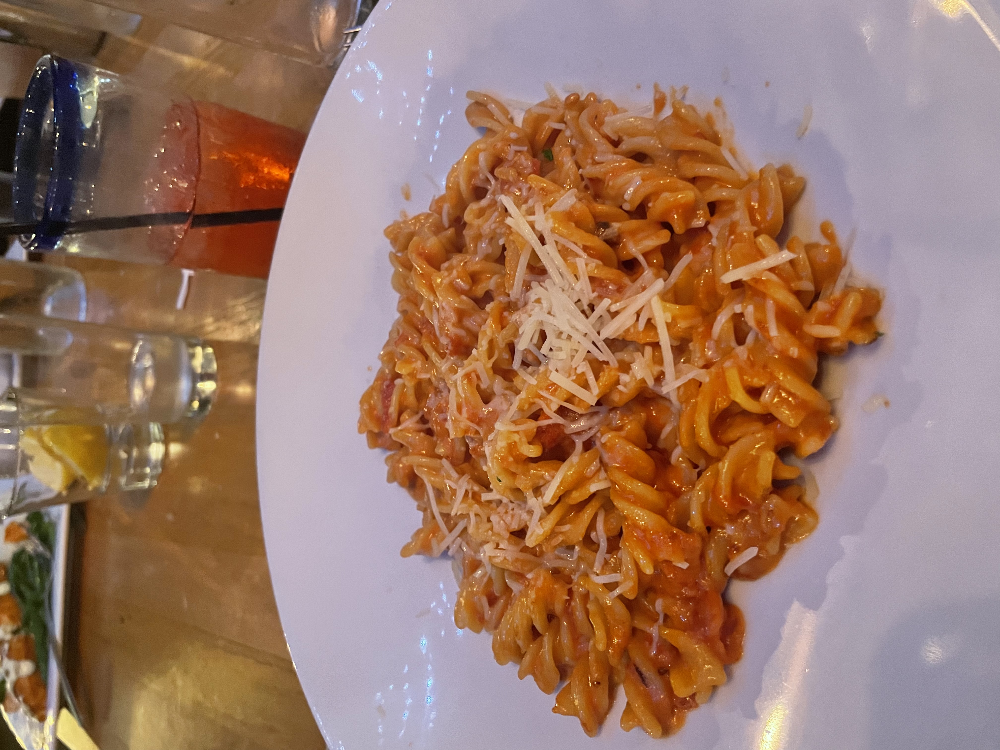

Another one of my hobbies is cooking. I am extremely interested in the art of cuisine. My favorite dish to make is penne alla vodka because I feel it is my best. My sister is a baker, so we make a good combo for dinner and dessert!
My Hobbies!
My third hobby is playing sports. I love football, basketball, tennis, and as mentioned, golf. I love being outside and playing with my friends. It is always a great exercise and a fun time.